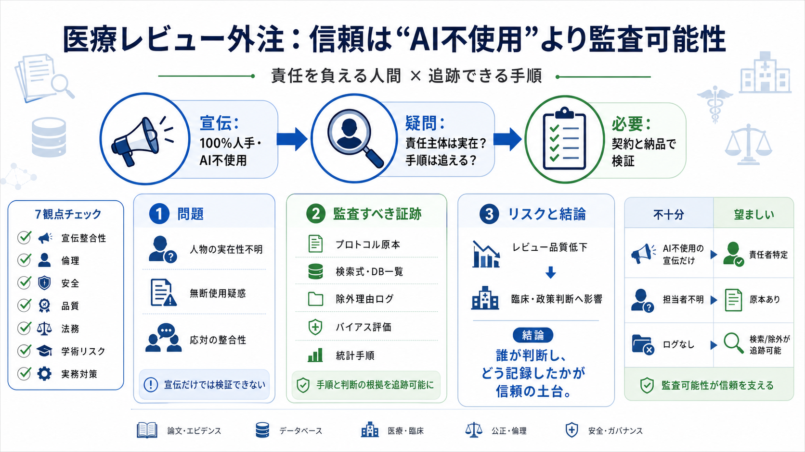

宣伝（主張）
人が作成／AI不使用
PhDメソドロジスト監督（とされる）
PhDメソドロジスト監督（とされる）

「100%人手」「AI不使用」を掲げる医療系システマティックレビュー外注サービスに対し、人物の実在性・無断使用・応対の実態が疑われている、という報道の論点を整理します。
サービスは「100% human-written, never AI（AIは使わない）」を強く訴求。一方で、外部報道では「実態が一致していない可能性」が複数の観点から示されています。
システマティックレビュー／メタアナリシスは、研究の「土台」になる工程です。土台の責任主体やプロセスが曖昧だと、結果の信頼性にも揺らぎが起きます（安全・政策にも波及）。
PRISMA 2020やコクランハンドブックに「言及がある」だけでは不十分です。価値は、実際にどのDBをどう検索し、除外理由をどう記録し、判断を誰が行ったかにあります。
報道では、サイト上のPhDレビュー担当者について「実在性が確認できない」ことが問題視されています。責任者が確認できないと、誤りが起きた際の説明責任を追えません。
宣伝が「AI不使用」でも、実在の人間が関わっていない疑いがあると意味が変わります。重要なのは、責任を負える人間の関与とプロセスの検証可能性です。
報道では、実在する専門家の氏名・写真・経歴が無断で使用されている疑いが挙げられています。これは研究倫理だけでなく、人格権・名誉・法務リスクに直結します。
報道では、電話応対やメールでAIエージェントが応答しているように見える、との指摘があります。さらにメール文面やチャット内容がAI生成の特徴と整合する可能性も論じられています。
利用者は価格や納期だけでなく、監査可能な証跡が契約・納品要件になっているか確認すべきです。少なくとも「プロトコル原本」と「検索・除外のログ」を揃えることが重要になります。
入力データは、AI生成テキストやAI生成の引用が論文に混入し、査読・出版プロセスが“量の圧力”で揺らぐリスクに警戒しています。今回の疑惑は供給側の問題でも、最終的には流通側へ波及しうます。
「AIを使っていない」は免罪符ではありません。一方でAI利用があっても、監査可能な手順と責任ある人間の関与が示されれば、問題の度合いは変わります。
報道と解釈から導ける重要観点を、利用者が点検する順序としてまとめます（i〜vii）。
入力データの範囲では、成果物の中身（実際にどの論文がどう使われたか）、レビュー過程のログ、第三者監査などの“監査可能な証拠”が十分とは言えません。そのため、確定的な断定は難しい面があります。
結論として、今回の核心は「AIかどうか」よりも、責任主体の実在性とプロセスの透明性（監査可能性）です。外注するなら、契約で“追跡できる証跡”を要求し、納品物で検証できる形にしておくのが安全です。
No references found